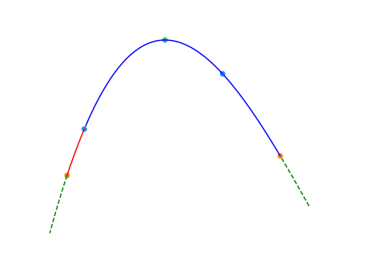
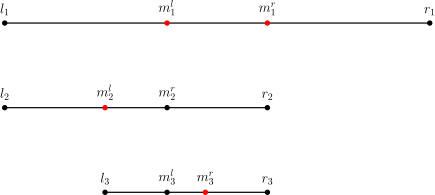

Binary
本页面将简要介绍二分查找，由二分法衍生的三分法以及二分答案．
二分法
定义
二分查找（英语：binary search），也称折半搜索（英语：half-interval search）、对数搜索（英语：logarithmic search），是用来在一个有序数组中查找某一元素的算法．
过程
以在一个升序数组中查找一个数为例．
它每次考察数组当前部分的中间元素，如果中间元素刚好是要找的，就结束搜索过程；如果中间元素小于所查找的值，那么左侧的只会更小，不会有所查找的元素，只需到右侧查找；如果中间元素大于所查找的值同理，只需到左侧查找．
性质
时间复杂度
二分查找的最优时间复杂度为 $O(1)$．
二分查找的平均时间复杂度和最坏时间复杂度均为 $O(\log n)$．因为在二分搜索过程中，算法每次都把查询的区间减半，所以对于一个长度为 $n$ 的数组，至多会进行 $O(\log n)$ 次查找．
空间复杂度
迭代版本的二分查找的空间复杂度为 $O(1)$．
递归（无尾调用消除）版本的二分查找的空间复杂度为 $O(\log n)$．
实现
int binary_search(int start, int end, int key) {
int ret = -1; // 未搜索到数据返回-1下标
int mid;
while (start <= end) {
mid = start + ((end - start) >> 1); // 直接平均可能会溢出，所以用这个算法
if (arr[mid] < key)
start = mid + 1;
else if (arr[mid] > key)
end = mid - 1;
else { // 最后检测相等是因为多数搜索情况不是大于就是小于
ret = mid;
break;
}
}
return ret; // 单一出口
}
???+ note "Note"
参考 编译优化 #移位代替乘法，对于 $n$ 是有符号数的情况，当你可以保证 $n\ge 0$ 时，n >> 1 比 n / 2 指令数更少．
最大值最小化
注意，这里的有序是广义的有序，如果一个数组中的左侧或者右侧都满足某一种条件，而另一侧都不满足这种条件，也可以看作是一种有序（如果把满足条件看做 $1$，不满足看做 $0$，至少对于这个条件的这一维度是有序的）．换言之，二分搜索法可以用来查找满足某种条件的最大（最小）的值．
要求满足某种条件的最大值的最小可能情况（最大值最小化），首先的想法是从小到大枚举这个作为答案的「最大值」，然后去判断是否合法．若答案单调，就可以使用二分搜索法来更快地找到答案．因此，要想使用二分搜索法来解这种「最大值最小化」的题目，需要满足以下三个条件：
- 答案在一个固定区间内；
- 可能查找一个符合条件的值不是很容易，但是要求能比较容易地判断某个值是否是符合条件的；
- 可行解对于区间满足一定的单调性．换言之，如果 $x$ 是符合条件的，那么有 $x + 1$ 或者 $x - 1$ 也符合条件．（这样下来就满足了上面提到的单调性）
当然，最小值最大化是同理的．
STL 的二分查找
C++ 标准库中实现了查找首个不小于给定值的元素的函数 std::lower_bound 和查找首个大于给定值的元素的函数 std::upper_bound，二者均定义于头文件 <algorithm> 中．
二者均采用二分实现，所以调用前必须保证元素有序．
bsearch
bsearch 函数为 C 标准库实现的二分查找，定义在 <stdlib.h> 中．在 C++ 标准库里，该函数定义在 <cstdlib> 中．qsort 和 bsearch 是 C 语言中唯二的两个算法类函数．
bsearch 函数相比 qsort（排序相关 STL）的四个参数，在最左边增加了参数「待查元素的地址」．之所以按照地址的形式传入，是为了方便直接套用与 qsort 相同的比较函数，从而实现排序后的立即查找．因此这个参数不能直接传入具体值，而是要先将待查值用一个变量存储，再传入该变量地址．
于是 bsearch 函数总共有五个参数：待查元素的地址、数组名、元素个数、元素大小、比较规则．比较规则仍然通过指定比较函数实现，详见 排序相关 STL．
bsearch 函数的返回值是查找到的元素的地址，该地址为 void 类型．
注意：bsearch 与上文的 lower_bound 和 upper_bound 有两点不同：
- 当符合条件的元素有重复多个的时候，会返回执行二分查找时第一个符合条件的元素，从而这个元素可能位于重复多个元素的中间部分．
- 当查找不到相应的元素时，会返回 NULL．
用 lower_bound 可以实现与 bsearch 完全相同的功能，所以可以使用 bsearch 通过的题目，直接改写成 lower_bound 同样可以实现．但是鉴于上述不同之处的第二点，例如，在序列 1、2、4、5、6 中查找 3，bsearch 实现 lower_bound 的功能会变得困难．
利用 bsearch 实现 lower_bound 的功能比较困难，是否一定就不能实现？答案是否定的，存在比较 tricky 的技巧．借助编译器处理比较函数的特性：总是将第一个参数指向待查元素，将第二个参数指向待查数组中的元素，也可以用 bsearch 实现 lower_bound 和 upper_bound，如下文示例．只是，这要求待查数组必须是全局数组，从而可以直接传入首地址．
int A[100005]; // 示例全局数组
// 查找首个不小于待查元素的元素的地址
int lower(const void *p1, const void *p2) {
int *a = (int *)p1;
int *b = (int *)p2;
if ((b == A || compare(a, b - 1) > 0) && compare(a, b) > 0)
return 1;
else if (b != A && compare(a, b - 1) <= 0)
return -1; // 用到地址的减法，因此必须指定元素类型
else
return 0;
}
// 查找首个大于待查元素的元素的地址
int upper(const void *p1, const void *p2) {
int *a = (int *)p1;
int *b = (int *)p2;
if ((b == A || compare(a, b - 1) >= 0) && compare(a, b) >= 0)
return 1;
else if (b != A && compare(a, b - 1) < 0)
return -1; // 用到地址的减法，因此必须指定元素类型
else
return 0;
}
因为现在的 OI 选手很少写纯 C，并且此方法作用有限，所以不是重点．对于新手而言，建议老老实实地使用 C++ 中的 lower_bound 和 upper_bound 函数．
二分答案
解题的时候往往会考虑枚举答案然后检验枚举的值是否正确．若满足单调性，则满足使用二分法的条件．把这里的枚举换成二分，就变成了「二分答案」．
???+ note "Luogu P1873 砍树" 伐木工人米尔科需要砍倒 $M$ 米长的木材．这是一个对米尔科来说很容易的工作，因为他有一个漂亮的新伐木机，可以像野火一样砍倒森林．不过，米尔科只被允许砍倒单行树木．
米尔科的伐木机工作过程如下：米尔科设置一个高度参数 $H$（米），伐木机升起一个巨大的锯片到高度 $H$，并锯掉所有的树比 $H$ 高的部分（当然，树木不高于 $H$ 米的部分保持不变）．米尔科就得到树木被锯下的部分．
例如，如果一行树的高度分别为 $20,~15,~10,~17$，米尔科把锯片升到 $15$ 米的高度，切割后树木剩下的高度将是 $15,~15,~10,~15$，而米尔科将从第 $1$ 棵树得到 $5$ 米木材，从第 $4$ 棵树得到 $2$ 米木材，共 $7$ 米木材．
米尔科非常关注生态保护，所以他不会砍掉过多的木材．这正是他尽可能高地设定伐木机锯片的原因．你的任务是帮助米尔科找到伐木机锯片的最大的整数高度 $H$，使得他能得到木材至少为 $M$ 米．即，如果再升高 $1$ 米锯片，则他将得不到 $M$ 米木材．
??? note "解题思路" 我们可以在 $1$ 到 $10^9$ 中枚举答案，但是这种朴素写法肯定拿不到满分，因为从 $1$ 枚举到 $10^9$ 太耗时间．我们可以在 $[1,~10^9]$ 的区间上进行二分作为答案，然后检查各个答案的可行性（一般使用贪心法）．这就是二分答案．
??? note "参考代码" ```cpp int a[1000005]; int n, m;
bool check(int k) { // 检查可行性，k 为锯片高度
long long sum = 0;
for (int i = 1; i <= n; i++) // 检查每一棵树
if (a[i] > k) // 如果树高于锯片高度
sum += (long long)(a[i] - k); // 累加树木长度
return sum >= m; // 如果满足最少长度代表可行
}
int find() {
int l = 1, r = 1e9 + 1; // 因为是左闭右开的，所以 10^9 要加 1
while (l + 1 < r) { // 如果两点不相邻
int mid = (l + r) / 2; // 取中间值
if (check(mid)) // 如果可行
l = mid; // 升高锯片高度
else
r = mid; // 否则降低锯片高度
}
return l; // 返回左边值
}
int main() {
cin >> n >> m;
for (int i = 1; i <= n; i++) cin >> a[i];
cout << find();
return 0;
}
```
看完了上面的代码，你肯定会有两个疑问：
1. 为何搜索区间是左闭右开的？
因为搜到最后，会这样（以合法的最大值为例）：

然后会

合法的最小值恰恰相反．
2. 为何返回左边值？
同上．
三分法
引入
二分法可以用于近似求出函数的零点．如果需要求出单峰函数的极值点，通常需要使用三分法（ternary search）．
对于一个函数 $f(x)$，如果存在 $x^$ 使得 $f(x)$ 在 $x
??? note "为什么不通过求导函数的零点来求极值点？" 客观上，求出导数后，通过二分法求出导数的零点（由于函数是单峰函数，其导数在同一范围内的零点是唯一的）得到单峰函数的极值点是可行的．
但首先，对于一些函数，求导的过程和结果比较复杂．
其次，某些题中需要求极值点的单峰函数并非一个单独的函数，而是多个函数进行特殊运算得到的函数（如求多个单调性不完全相同的一次函数的最小值的最大值）．此时函数的导函数可能是分段函数，且在函数某些点上可能不可导．
???+ warning "注意" 三分法既可以求出单峰函数的最大值，也可以求出「单谷函数」的最小值．为行文方便，除特殊说明外，下文中均以求单峰函数的最大值为例．
过程
三分法与二分法的基本思想类似，但每次操作需在当前区间 $[l,r]$（下图中两个橙点之间）内任取两点 $lmid < rmid$（下图中的两个蓝点）．如下图所示，如果 $f(lmid)<f(rmid)$，则在 $[l,lmid)$（下图中的红色部分）中函数必然单调递增，最大值点（下图中的绿点）必然不在这一区间内，可舍去这一区间；但是，无法排除最大值点在 $rmid$ 右侧的可能性，所以无法舍去更多区间．反之亦然．

三分法的正确性并不依赖于 $lmid$ 和 $rmid$ 的选择，通常可以取两个三等分点．但是，它们的选择确实会影响三分法的效率．这是因为三分法的每次操作都会舍去两侧区间中的其中一个．为减少三分法的操作次数，应使两侧区间尽可能大．因此，每一次操作时的 $lmid$ 和 $rmid$ 分别取 $mid-\varepsilon$ 和 $mid+\varepsilon$ 是一个不错的选择．事实上，$mid\pm \varepsilon$ 的取法相当于求 $mid$ 处的近似导数 $\dfrac{f(mid+\varepsilon)-f(mid-\varepsilon)}{2\varepsilon}$ 判断正负以确定极值点在 $mid$ 的哪一侧．
实现
伪代码如下：
$$ \begin{array}{l} \textbf{Algorithm}\operatorname{TernarySearch}(f,l,r):\ \textbf{Input. } \text{A unimodal function } f(x) \text{ and its domain } [l,r]. \ \textbf{Output. } \text{The maximizer }x^\text{, up to an error of }\varepsilon\text{, and its value } f(x^). \ \textbf{Method. } \ \begin{array}{ll} 1 & \textbf{while } r - l > \varepsilon\ 2 & \qquad mid\gets (l+r)/2\ 3 & \qquad lmid\gets mid - \varepsilon / 3 \ 4 & \qquad rmid\gets mid + \varepsilon / 3 \ 5 & \qquad \textbf{if } f(lmid) < f(rmid) \ 6 & \qquad \qquad l\gets lmid \ 7 & \qquad \textbf{else } \ 8 & \qquad \qquad r\gets rmid \ 9 & x^ \gets (l+r)/2 \ 10& \textbf{return } x^,~ f(x^*) \end{array} \end{array} $$
???+ tip "分割点的选取" 代码中，分割点选取为 $mid \pm \varepsilon / 3$ 是为了保证分割点总是在当前的 $l$ 和 $r$ 之间，进而避免陷入死循环．
???+ info "整数的情形" 如果函数 $f(x)$ 的定义域是整数，那么上述三分法和后文的黄金分割法都应该在 $r-l$ 很小时就终止．对于 $r-l$ 很小的情形，需要通过暴力遍历的方法求得最大值点．
优化：黄金分割法
如果单次调用 $f(x)$ 的成本很高，需要进一步减少 $f(x)$ 的调用次数，可以通过黄金分割法（golden-section search）进一步改进三分法的常数．这也是华罗庚提出的优选法的重要内容．
三分法中，每轮迭代需要两次函数调用，且单轮迭代后区间长度至多缩短到原来的 $1/2$．这意味着，要达到精度 $\varepsilon$，至少需要
$$ 2\log_2\dfrac{r-l}{\varepsilon} $$
次函数调用．这是三分法能够取得的最好的结果．如果选取其他分点，例如三等分点，那么调用次数会进一步增加，因为单轮迭代后区间缩短得更慢．
黄金分割法的改进思路是，复用前文已经计算过的分点．这样，除了第一轮迭代需要两次函数调用外，其余轮次的迭代只需要一次函数调用．设黄金分割比为
$$ \phi = \dfrac{\sqrt{5}-1}{2} \approx 0.618. $$
每轮迭代时，选取的分点是左右两个黄金分割点：
$$ m^l = \phi l +(1-\phi)r,~m^r = (1-\phi)l+\phi r. $$
黄金分割点分割线段具有自相似结构．也就是说，$m^l$ 是线段 $[l,r]$ 的左黄金分割点，也是线段 $[l,m^r]$ 的右黄金分割点．这样选取分点的好处是，第 $k>1$ 轮迭代选取的分点中，一定有一个分点是之前已经计算过的，可以直接复用之前的计算结果．

这样选取分点后，要达到精度 $\varepsilon$，只需要
$$ 1 + \log_{\phi^{-1}}\dfrac{r-l}{\varepsilon} \approx 1 + 1.44\log_2\dfrac{r-l}{\varepsilon} $$
次函数调用．渐近意义上，函数的调用次数更少．
伪代码如下：
$$ \begin{array}{l} \textbf{Algorithm}\operatorname{GoldenSectionSearch}(f,l,r):\ \textbf{Input. } \text{A unimodal function } f(x) \text{ and its domain } [l,r]. \ \textbf{Output. } \text{The maximizer }x^\text{, up to an error of }\varepsilon\text{, and its value } f(x^). \ \textbf{Method. } \ \begin{array}{ll} 1 & lmid \gets \phi l + (1-\phi)r \ 2 & rmid \gets (1-\phi)l + \phi r \ 3 & lval \gets f(lmid) \ 4 & rval \gets f(rmid) \ 5 & \textbf{while } r - l > \varepsilon \ 6 & \qquad \textbf{if } lval > rval \ 7 & \qquad \qquad r \gets rmid \ 8 & \qquad \qquad rmid \gets lmid \ 9 & \qquad \qquad rval \gets lval \ 10& \qquad \qquad lmid \gets \phi l + (1-\phi)r \ 11& \qquad \qquad lval \gets f(lmid) \ 12& \qquad \textbf{else} \ 13& \qquad \qquad l \gets lmid \ 14& \qquad \qquad lmid \gets rmid \ 15& \qquad \qquad lval \gets rval \ 16& \qquad \qquad rmid \gets (1-\phi)l + \phi r \ 17& \qquad \qquad rval \gets f(rmid) \ 18& x^ \gets (l+r)/2 \ 19& \textbf{return }x^,~f(x^*) \end{array} \end{array} $$
例题
???+ note "洛谷 P3382 - 三分" 给定一个 $N$ 次函数和范围 $[l, r]$，求出使函数在 $[l, x]$ 上单调递增且在 $[x, r]$ 上单调递减的唯一的 $x$ 的值．
??? note "解题思路" 本题要求求 $N$ 次函数在 $[l, r]$ 取最大值时自变量的值，显然可以使用三分法．
??? note "参考代码"
=== "C++"
cpp
--8<-- "docs/basic/code/binary/binary_1.cpp"
=== "Python"
```python
--8<-- "docs/basic/code/binary/binary_1.py"
```
习题
分数规划
参见：分数规划
分数规划通常描述为下列问题：每个物品有两个属性 $c_i$，$d_i$，要求通过某种方式选出若干个，使得 $\frac{\sum{c_i}}{\sum{d_i}}$ 最大或最小．
经典的例子有最优比率环、最优比率生成树等等．
分数规划可以用二分法来解决．